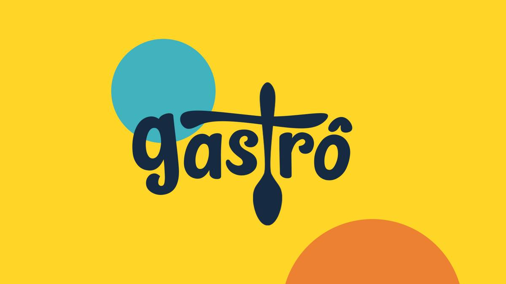
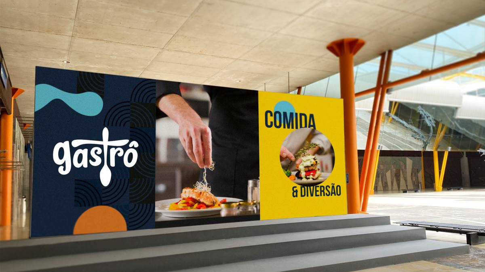
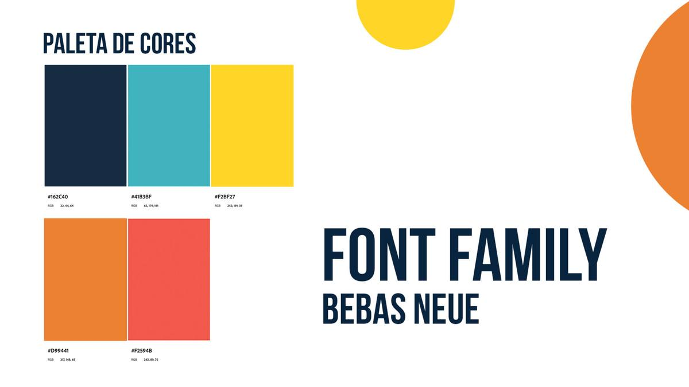
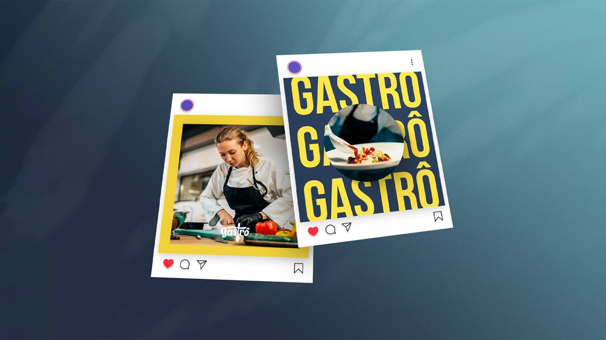
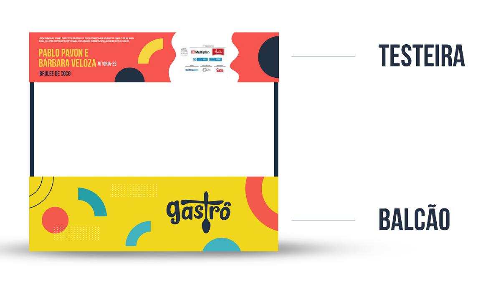
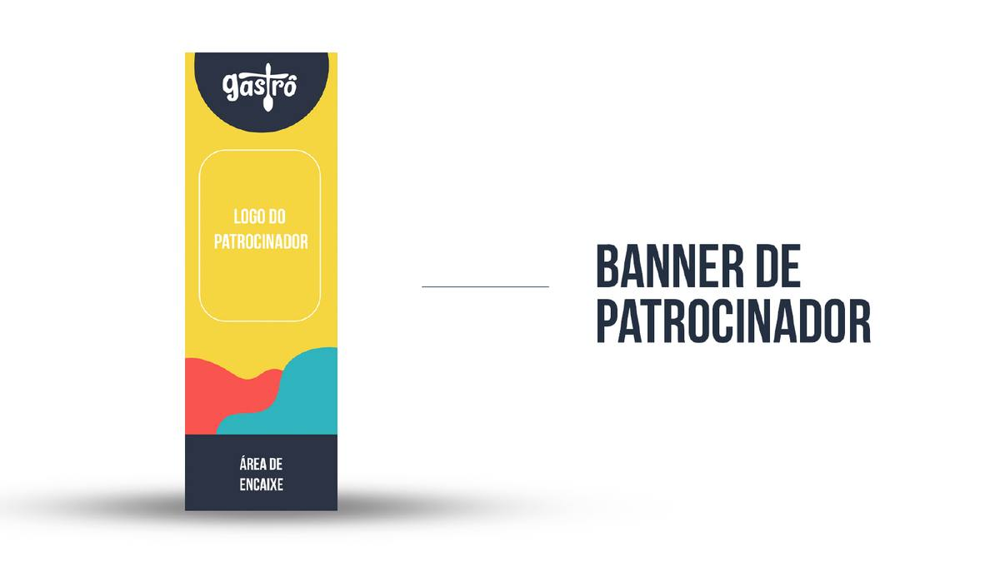
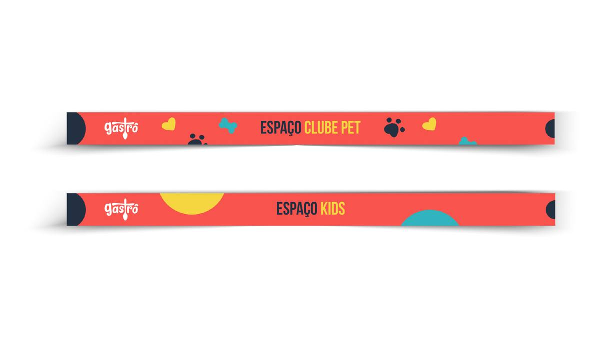
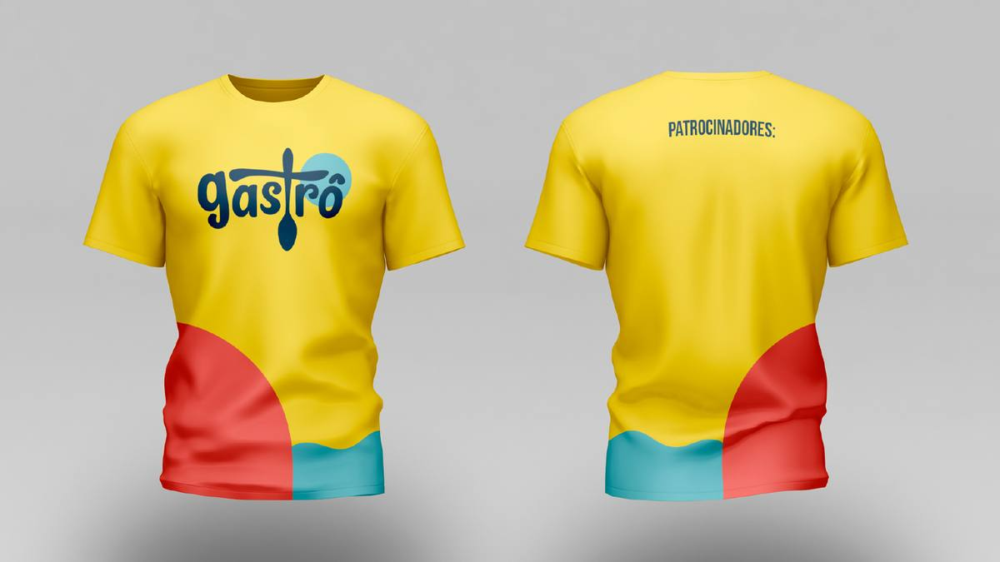
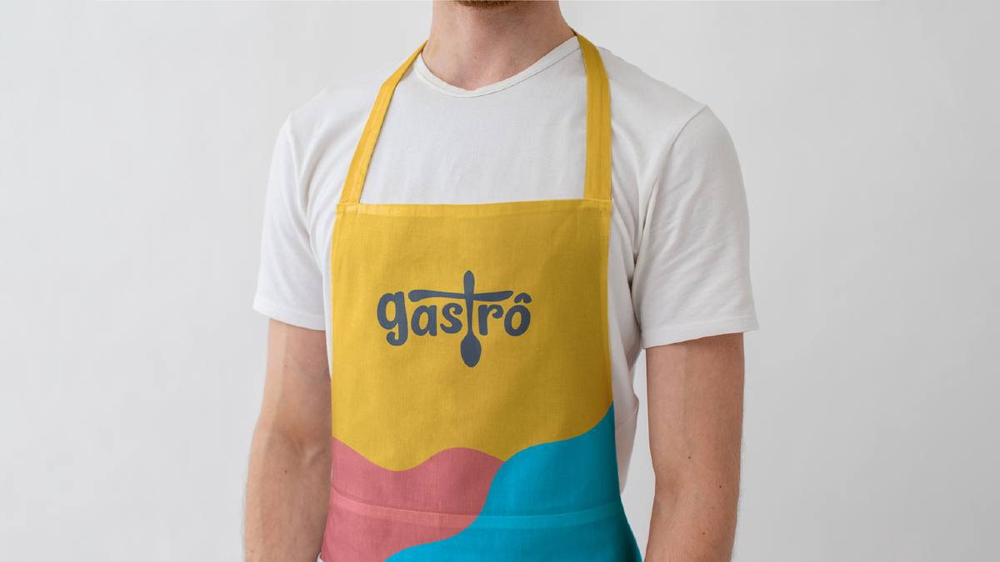

Identidade visual completa para o Gastrô, evento premium de gastronomia no VillageMall Rio com curadoria do Chef Heaven. Do logo principal aos 40+ materiais aplicados em ambientação, sinalização, papelaria e ativações on-site, criamos um sistema visual que traduz a sofisticação da culinária autoral.

O desafio e a solução
O Gastrô precisava de uma identidade visual que comunicasse sofisticação sem ser pretensiosa, e que tivesse força visual o suficiente para se destacar dentro do ambiente premium do VillageMall. A solução foi construir um sistema baseado no amarelo vibrante como cor de assinatura, contrastando com uma tipografia editorial elegante.
A linguagem visual se desdobrou em mais de 40 peças aplicadas em toda a experiência: ambientação do espaço, sinalização interna, papelaria, menus, cardápios, materiais promocionais e ativações em redes sociais. Cada elemento foi pensado para fortalecer o universo gastronômico de alta qualidade que define o evento.








Resultado
A identidade visual do Gastrô conferiu ao evento a sofisticação que ele merecia, conectando o público ao universo premium da gastronomia autoral. Mais que decorar um espaço, criamos uma experiência visual coesa que reforçou o posicionamento do evento no calendário gastronômico do Rio.